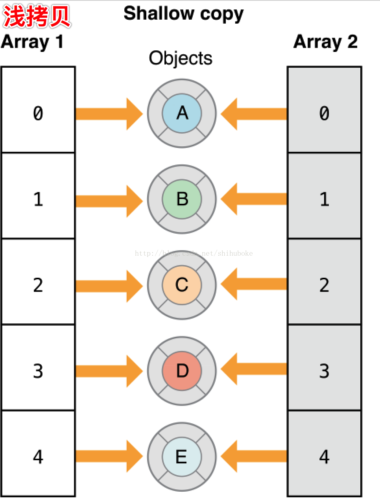

一、浅拷贝概念
1.浅拷贝:只是拷贝了对象的指针，而不是拷贝对象本身。
2.在Objective-C中，通过两个方法 copy和mutableCopy可以执行拷贝操作，其中copy是获得一个不可变对象，而mutableCopy是获得一个可变对象。
3.并且两个方法分别调用copyWithZone和mutableCopyWithZone两个方法来进行拷贝操作，一个类必须实现copyWithZone或者mutableCopyWithZone，才能进行copy或者mutableCopy 
二、浅拷贝代码实现
浅拷贝有很多中方法，当你进行浅拷贝时,会向原始的集合发送retain消息，这时引用计数就会 +1 ，同时指针就被拷贝到新的集合中去。
NSArray *shallowCopyArray = [someArray copyWithZone:nil];
NSDictionary *shallowCopyDict = [[NSDictionary alloc] initWithDictionary:someDictionary copyItems:NO];
注意:如果集合里的对象都遵循NSCopying 协议，那么对象就会被深拷贝到新的集合。如果对象没有遵循 NSCopying 协议，而尝试用这种方法进行深拷贝，会在运行时出错。
三、浅拷贝、深拷贝、完全拷贝区别:
浅拷贝(shallow copy)： 在浅拷贝操作时，对于被拷贝对象的每一层都是指针拷贝。
深拷贝(one-level-deep copy)：在深拷贝操作时，对于被拷贝对象，至少有一层是深拷贝。
完全拷贝(real-deep copy)： 在完全拷贝操作时，对于被拷贝对象的每一层都是对象拷贝
四、系统对象的拷贝
不管是集合类对象，还是非集合类对象，当接收到copy和mutableCopy消息时，都遵循以下准则：
copy返回不可变对象(immutable)；所以，如果对copy返回值使用mutable对象接口就会crash； mutableCopy返回可变对象(mutable);